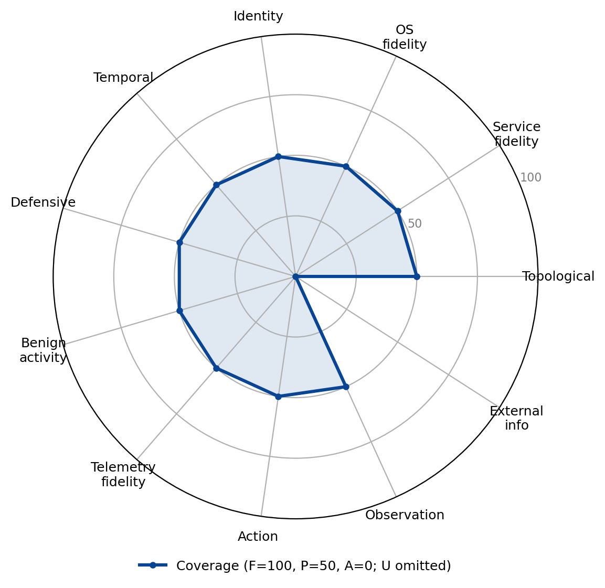

PrimAITE
Family: Abstract simulator · Category: A

The higher-fidelity DSTL/ARCD successor to Yawning-Titan: it models topology with routing and ACLs, protocol-aware services, a simulated filesystem and user accounts, green pattern-of-life, and packet-capture telemetry. The broadest-coverage environment here, yet full on no dimension because every subsystem is simulated rather than real software.
Best suited for: Ransomware deployment, Worm / self-propagation, Credential-based privilege escalation, Evasive red-team operation, Alert triage, Incident response, Threat hunting, Attacker-defender simulation, Security architecture evaluation.
PrimAITE reaches partial on ten of the eleven dimensions but full on none: it models each subsystem in interface rather than as real software, illustrating breadth of coverage without the depth a real-software layer provides.
Dimension coverage
| Dimension | Coverage |
|---|---|
| Topological realism | Partial |
| Service fidelity | Partial |
| OS fidelity | Partial |
| Identity realism | Partial |
| Temporal dynamics | Partial |
| Defensive realism | Partial |
| Benign activity realism | Partial |
| Telemetry fidelity | Partial |
| Action realism | Partial |
| Observation realism | Partial |
| External information ecosystem | Absent |
Fit by objective
Suitability is a property of the (environment, objective) pair; a “not suitable” verdict names the dimension the objective needs that this environment abstracts.
| Objective | Verdict | Why |
|---|---|---|
| Targeted data exfiltration | Not suitable | does not provide External information ecosystem, a dimension this objective treats as critical |
| Ransomware deployment | Partial fit | covers the required dimensions, but below the fit threshold |
| Worm / self-propagation | Partial fit | covers the required dimensions, but below the fit threshold |
| Credential-based privilege escalation | Partial fit | covers the required dimensions, but below the fit threshold |
| Evasive red-team operation | Partial fit | covers the required dimensions, but below the fit threshold |
| Alert triage | Partial fit | covers the required dimensions, but below the fit threshold |
| Incident response | Partial fit | covers the required dimensions, but below the fit threshold |
| Threat hunting | Partial fit | covers the required dimensions, but below the fit threshold |
| Attacker-defender simulation | Partial fit | covers the required dimensions, but below the fit threshold |
| Security architecture evaluation | Partial fit | covers the required dimensions, but below the fit threshold |